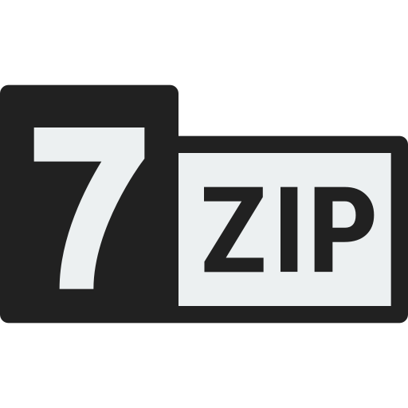
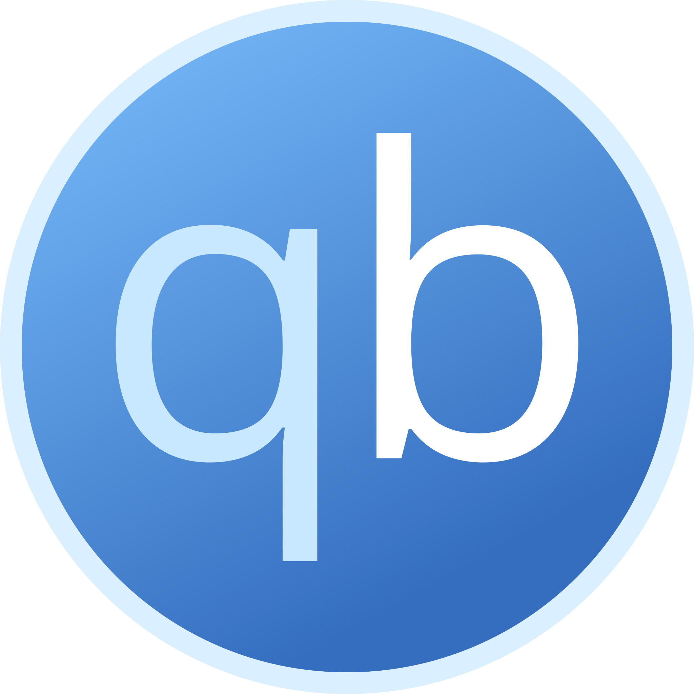
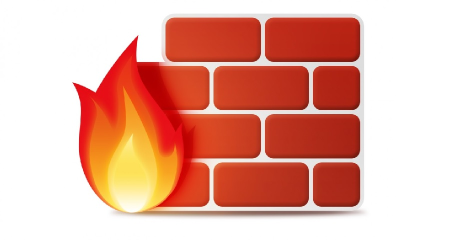
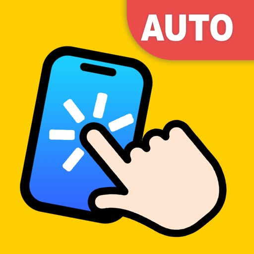

7zip
Programa para extração e compactação de arquivos.
Link

MicMute
Tenha mais controle sobre seu microfone.
Link
Winhance
Faça a limpeza do seu Windows após instalação.
Link
PowerIso
Permite mexer e gravar arquivos em uma ISO sem necessidade de extração.
Link
Caffeine
Impeça sua máquina de entrar em hibernação.
Link
MSI Afterburner
Monitore seus componentes em game e controle sua GPU.
Link

Ruffus
Crie um Pendrive Bootavel para instalações de sistemas operacionais.
Link
FlameShot
Tire prints de sua tela com funções para facilitar seu dia-a-dia.
Link

Qbittorrent
Faça downloads utilizando P2P com um programa confiável.
Link

Vegas 15
Editor de videos legacy, mas é bom para edições basicas.
Link

Putty
Faça conexões dos mais diversos protocolos utilizando Putty.
Link

AnyDesk
Acesse outra máquina remotamente e compartilhe arquivos.
Link

TestarPortas
Muito útil para saber se uma porta está aberta no computador, facilitando conexões externas.
Link

AutoClicker
AutoClicker poderoso com função SuperClicker e Macros que decoram padrões.
Link

Unattend Generator
Gerador de ISO Windows 11 com muitas funções para debloat, instalação e pré-configuração.
Link

Microsoft Activation Scripts
Ative seu Windows e Office com um comando.
Link

VisualCppRedist AIO
Instale todos os pacotes Visual Studio desde 2005 até 2022 com apenas um click.
Link


Entreterimento
Discord
Plataforma social de mensagens instantâneas e chat de voz.
LinkTelegram
Converse com seus amigos, participe de grupos e utilize bots ao seu favor.
LinkEpic
Central de jogos da Epic, toda semana há sempre 2 jogos gratis para resgatar ❤️
LinkSteam
Central de jogos Steam.
LinkSteam DB
Veja histórico de preços e saiba quanto um jogo custa quando entra em promoção.
LinkSteam Charts
Veja players online e outras informações sobre os jogos.
LinkPrism Launcher
Desfrute do melhor launcher de Minecraft que existe, ele consegue baixar mods dos mais diversos serviços como CurseForge, FTBTeam e Modrinth.
LinkPrism Launcher Cracked
Mesmo launcher mencionado acima mas Crackeado.
LinkStremio
Baixe a melhor plataforma de Stream para ver séries, filmes e animes de graça.
LinkChrome
Navegador da Google
LinkParsec
Jogue jogos com seus amigos em acesso remoto com boa latencia, ou compartilhe sua tela com imagem nítida.
LinkAnálises
Windir
Analisa discos e ajuda a fazer limpeza do HD.
LinkADV Scanner
Busca e encontra IPs na rede baseado em uma mascara.
LinkSpaceSniffer
Apenas mostra, em formato de blocos, quais são os arquivos mais pesados no disco.
Link